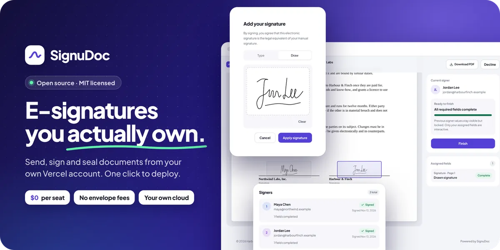
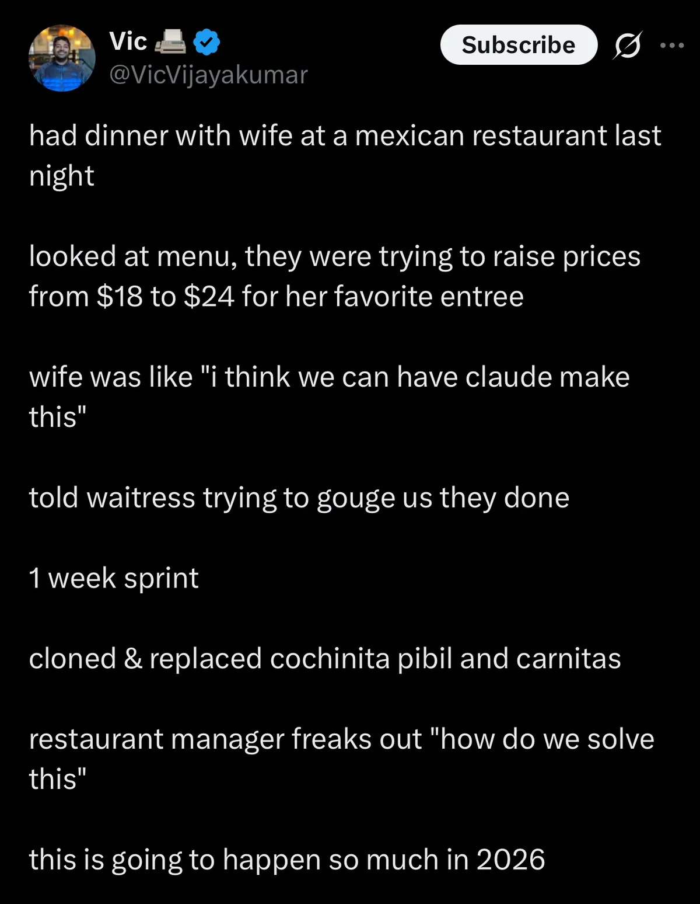

Kill-your-SaaS weekend
Kevin Rose got an $8,100 DocuSign quote, so he built his own and gave it away
♥ 25.3k⟲ 1,544🔖 13.9k👁 3.4M
Kevin Rose (he founded Digg) shared SignuDoc: a free e-signature app you deploy to your own Vercel account in one click. You upload a PDF, place signature fields, send links, and keep the sealed copy with an audit trail. There are no per-seat fees.
It became the biggest dev post of the past two days because it's the purest example of a trend people keep joking about: when a SaaS bill feels too high, an AI coding agent builds you a replacement in a weekend. The top contributor on the repo is literally claude.
How to try it: hit the Deploy button in the README. It sets up free Vercel, Neon (database) and Resend (email) plans, which the project says cover about 250 documents a month.